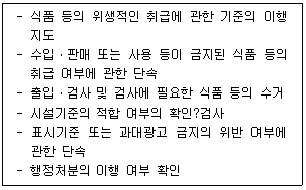
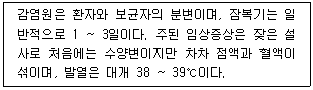
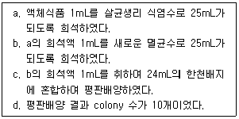
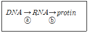

식품기사 (2012-08-26 기출문제)
1과목: 식품위생학
1. 식품의 방사선 조사에 대한 설명 중 틀린 것은?
- Co-60의 감마선이 이용된다.
- 식품의 발아 억제, 숙도 조절을 목적으로 사용한다.
- 일단 조사한 식품에 문제가 있으며 다시 조사하여 사용할 수 있다.
- 완제품의 경우 조사처리된 식품임을 나타내는 문구 및 조사도안을 표시하여야 한다.
(정답률: 90%)

2. 인수공통감염병에 대한 설명으로 틀린 것은?
- 사람과 동물 사이에 동일한 병원체에 의해 발생되는 질병 또는 감염상태
- 병에 걸린 육류 또는 유제품을 섭취 시 감염될 수 있음
- 결핵, 파상열 등이 속함
- 탄저병은 브루셀라균에 의해 발생됨
(정답률: 78%)
3. 식품위생법규에 의거 아래와 같은 직무를 수행하는 자는?

- 동업자조합 조합원
- 식품위생감시원
- 영양사
- 식품위생심의위원회 위원
(정답률: 89%)
4. 아래에서 설명하는 경구감염병은?

- 콜레라
- 장티푸스
- 유행성 간염
- 세균성 이질
(정답률: 59%)
5. 기생충에 감염됨으로서 일어나는 피해에 대한 설명 중 틀린 것은?
- 영양물질의 손실
- 조직의 파괴
- 자극과 염증유발
- 유행성 간염
(정답률: 77%)
6. 먹는 물의 수질기준에 의한 잔류염소(유리 잔류염소)의 기준은? (단, 샘물, 먹는샘물, 염지하수, 먹는염지하수, 먹는해양심층수 및 먹는물공동시설의 물의 경우는 적용하지 아니한다.)
- 1.0 mg/L를 넘지 아니할 것
- 2.0 mg/L를 넘지 아니할 것
- 3.0 mg/L를 넘지 아니할 것
- 4.0 mg/L를 넘지 아니할 것
(정답률: 45%)
7. 식중독의 원인균, 원인물질 및 유형의 관계가 잘못된 것은?
- Proteus morganii - 단백질 식품 - allergy 유발성식중독
- Clostridium botulinum - 통조림 식품 - 독소형식중독
- Staphylococcus epidermidis - entertoxin - 감염형식중독
- Vibrio parathaemolyticus - 어패류 - 감염형식중독
(정답률: 75%)
8. 식품첨가물을 올바르게 사용하기 위한 방법으로 거리가 먼 것은?
- 식품의 성질과 제조 방법을 고려하여 적합한 첨가물을 선택한다.
- 어떤 식품이나 관계없이 첨가물의 사용은 법정허용량 만큼을 사용한다.
- 식품첨가물공전 총칙에 의해 도량형은 미터법을 준용한다.
- 식품의 유통조건(온도, 빛 등)을 고려하여 첨가물의 효과를 과신하지 말아야 한다.
(정답률: 84%)
9. 포도상구균에 의하여 발생되는 식중독의 원인 물질은?
- 프토마인(ptomaine)
- 테트로도톡신(tetrodotoxin)
- 에르고톡신(ergotoxin)
- 엔테로톡신(enterotoxin)
(정답률: 87%)
10. 다음 중 허용된 소포제는?
- pyrogallol
- sodium L-ascorbate
- propylene glycol
- silicone resin
(정답률: 41%)
11. 식품의 원재료에는 존재하지 않으나 가공처리공정 중 유입 또는 생성되는 위해인자와 거리가 먼 것은?
- 트리코테신(trichothecene)
- 다핵방향족 탄화수소(polynuclear aromatic hydrocarbons, PAHs)
- 아크릴아마이드(acrylamide)
- 모노클로로프로판디올(monochloropropabdiol, MCPD)
(정답률: 67%)
12. 물의 오염된 정도를 표시하는 지표로 호기성 미생물이 일정기간 동안 물 속에 있는 유기물을 분해할 때 사용하는 산소의 양을 나타내는 것은?
- BOD(biochemical oxygen demand)
- COD(chemical oxygen demand)
- SS(suspended solid)
- DO(dissolved oxygen)
(정답률: 86%)
13. 미생물 검사를 요하는 검체의 채취 방법에 대한 설명으로 틀린 것은?
- 채취 당시의 상태를 유지할 수 있도록 밀폐되는 용기ㆍ포장 등을 사용하여야 한다.
- 무균적으로 채취하더라도 검체를 소분하여서는 안된다.
- 부득이한 경우를 제외하고는 정상적인 방법으로 보관ㆍ유통중에 있는 것을 채취하여야 한다.
- 검체는 관련정보 및 특별수거계획에 따른 경우와 식품접객업소의 조리식품 등을 제외하고는 완전 포장된 것에서 채취하여야 한다.
(정답률: 79%)
14. 방사능 물질과 방사선 조사에 의한 인체와 식품의 영향에 대한 설명으로 틀린 것은?
- 반감기가 짧을수록 위험하다.
- 동위원소의 침착 장기의 기능 등에 따라 위험도의 차이가 있다.
- 혈액 흡수율이 높을수록 위험하다.
- 생체기관의 감수성이 클수록 위험하다.
(정답률: 81%)
15. 식품에서 생성되는 acrylamide에 의한 위험을 낮추기 위한 방법으로 잘못된 것은?
- 감자는 8 ℃ 이상의 음지에서 보관하고 냉장고에 보관하지 않는다.
- 튀김의 온도는 160℃ 이상으로 하고, 오븐의 경우는 200℃ 이상으로 조절한다.
- 빵이나 시리얼 등의 곡류 제품은 갈색으로 변하지 않도록 조리하고, 조리 후 갈색으로 변한 부분은 제거한다.
- 가정에서 생감자를 튀길 경우 물과 식초의 혼합물(1:1 비율)에 15분간 침지한다.
(정답률: 82%)
16. 장출혈성대장균의 특징 및 예방방법에 대한 설명으로 틀린 것은?
- 오염된 식품 이외에 동물 또는 감염된 사람과의 접촉 등을 통하여 전파될 수 있다.
- 74℃에서 1분 이상 가열하여도 사멸되지 않는 고열에 강한 변종이다.
- 신선채소류는 염소계 소독제 100ppm으로 소독 후 3회이상 세척하여 예방한다.
- 치료 시 항생제를 사용할 경우, 장출혈성대장균이 죽으면서 독소를 분비하여 요독증후군을 악화시킬 수 있다.
(정답률: 71%)
17. 특수독성시험이 아닌 것은?
- 최기형성시험
- 번식시험
- 변이원성시험
- 급성독성시험
(정답률: 81%)
18. 유전자 재조합 식품의 안전성에 대한 평가 시 평가항목이 아닌 것은?
- 항생제 내성
- 해충저항성과 독성
- 알레르기성
- 미생물 오염수준
(정답률: 83%)
19. 다음 중 차아염소산나트륨 소독 시 비해리형 차아염소산(HCIO)으로 존재하는 양(%)이 가장 많을 때의 pH는?
- pH 4.0
- pH 6.0
- pH 8.0
- pH 10.0
(정답률: 84%)
20. 식품 중 미생물 오염여부를 신속하게 검출하는 등에 활용되며, 검출을 원하는 특정 표적 유전물질을 증폭하는 방법은?
- Inductively Coupled Plasma(ICP)
- High Performance Liquid Chromatography(HPLC)
- Gas Chromatography(GC)
- Polymerase Chain Rreaction(PCR)
(정답률: 83%)
2과목: 식품화학
21. 조지방 정량을 위한 soxhlet에 사용되는 용매는?
- 에테르
- 에탄올
- 황산
- 암모니아수
(정답률: 87%)
22. 다음 견과류 중 같은 중량일 때 가장 열량을 적게 내는 것은?
- 밤
- 잣
- 호두
- 아몬드
(정답률: 77%)
23. 포르피린 링(porphyrin ring) 구조 안에 Mg2+을 함유하고 있는 색소 성분은?
- 미오글로빈
- 헤모글로빈
- 클로로필
- 헤모시아닌
(정답률: 69%)
24. 밀가루 풀과 같은 전분 gel은 교반하면 쉽게 액상인 sol로 되고 또 방치하면 다시 gel을 형성하는 성질은 어떤 유체의 특성인가?
- 뉴톤(Newton) 유체
- 슈도플라스틱(Pseudoplastic) 유체
- 딜라턴트(Dilatant) 유체
- 틱소트로픽(Thixotrophic) 유체
(정답률: 44%)
25. 식품성분분석에 있어서 검체의 채취방법 중 옳지 않은 것은?
- 미생물검사를 요하는 검체는 멸균된 기구, 용기 등을 사용하여야 한다.
- 점도가 높은 시료는 적절한 방법을 사용하여 점도를 낮추어 채취할 수 있다.
- 냉동식품은 상온으로 해동시켜 검체를 채취해야만 한다.
- 수분측정시료는 검체를 밀폐용기에 넣고 온도변화를 최소화한다.
(정답률: 83%)
26. 단백질의 열변성에 대한 설명 중 틀린 것은?
- 단백질 중에서 알부민과 글로불린이 가장 열변성이 쉽게 일어난다.
- 단백질에 수분이 많으면 비교적 낮은 온도에서 일어난다.
- 단백질은 일반적으로 등전점에서 가장 열변성이 일어나기 어렵다.
- 단백질은 전해질이 있으면 변성온도가 낮아진다.
(정답률: 65%)
27. 관능검사 방법 중 종합적 차이 검사는 전체적 관능 특성의 차이유무를 판별하고자 기준 시료와 비교하는 것인데 이때 사용하는 방법이 아닌 것은?
- 일-이점 검사
- 삼점 검사
- 단일 시료 검사
- 이점 비교 검사
(정답률: 70%)
28. 즉석밥 제조 시 밥맛이 좋고 영양가가 높은 제품을 만들기 위한 방법이 아닌 것은?
- 도정을 미리 해 둔 쌀을 이용하지 않고 밥을 짓기 2 ~ 3일전에 도정한 쌀을 이용하여 밥을 만든다.
- 쌀을 보관함에 있어 수분과 온도가 매우 중요하므로 수분함량 16%와 온도 20℃를 유지하여 저장하는 것이 바람직하다.
- 0분도정을 실시하면 현미를 확보할 수 있으나 밥맛에 영향을 주고, 10분도정을 하면 하얀 백미를 확보할 수 있으나 영양 손실이 우려되어 7 ~ 9분 정도 도정을 실시하는것이 좋다.
- 쌀바구미가 생성되면 밥맛에 영향을 주므로 해충의 침투를 차단하고 곡류의 수분을 13% 이하로 유지하며 적정온도 조건을 유지하도록 한다.
(정답률: 79%)
29. 우유의 주된 단백질은?
- 락토알부민(lactalbumin)
- 락토글로블린(lactoglobulin)
- 카제인(casein)
- 뮤신(mucin)
(정답률: 76%)
30. 다음 식품 중 비뉴턴 유체의 성질을 가장 잘 나타내는 것은?
- 대두유
- 포도당용액
- 전분용액
- 소금용액
(정답률: 76%)
31. 햄을 만들 때 돼지고기에 질산염을 첨가하면 생성되는 선홍색 물질은?
- 미오글로빈(myoglobin)
- 옥시미오글로빈(oxymiglobin)
- 메트미오글로빈(metmyoglobin)
- 니트로소미오글로빈(nitrosomyglobin)
(정답률: 72%)
32. 다음 서류 중 주요 고형성분이 다른 하나는?
- 돼지감자
- 카사바
- 감자
- 마
(정답률: 79%)
33. 버터나 생크림을 수저로 떠서 접시에 올려놓았을 때 모양을 그대로 유지하는 물리적 성질은?
- 점성
- 탄성
- 소성
- 점탄성
(정답률: 73%)
34. 다음 식물성 카로티노이드(carotenoid)색소 중에서 프로비타민 A가 아닌 것은?
- α -carotene
- β -carotene
- cryptoxanthin
- xanthophyll
(정답률: 67%)
35. 콩에 대한 설명으로 틀린 것은?
- 콩에 가장 많은 지방산은 리놀레산(linoleic acid) 이다.
- 콩에 가장 많은 단백질은 글로블린(globulin) 이다.
- 콩에는 쌀에 비해 트립토판과 메티오닌이 많이 들어있다.
- 콩에는 무기질 중에서 K와 P가 많이 들어 있다.
(정답률: 76%)
36. 산화방지제로 사용되는 화합물의 종류와 주요 항산화 메카니즘의 연결이 잘못된 것은?
- 비타민 C - 수소공여 혹은 전자공여체
- β-카로틴 - 일중항산소(singlet oxygen) 제거
- 세사몰 - 수소공여 혹은 전자공여체
- EDTA - 산소제거
(정답률: 70%)
37. 식품의 텍스처 특성에 대한 설명이 올바른 것은?
- 저작성은 '무르다, 단단하다'라고 표현되는 특성이다.
- 부착성은 '미끈미끈하다, 끈적끈적하다' 등으로 표현된다.
- 응집성은 '기름지다, 미끈미끈하다'라고 표현되는 특성이다.
- 견고성은 '부스러지다, 깨지다'라고 표현되는 특성이다
(정답률: 59%)
38. 30%의 수분과 30%의 설탕(C12H22O11)을 함유하고 있는 식품의 수분활성도는?
- 0.98
- 0.95
- 0.82
- 0.90
(정답률: 60%)
39. 산패(rancidity)가 가장 빠른 지방산은?
- arachidonic acid
- linoleic acid
- stearic acid
- palmitic acid
(정답률: 67%)
40. 식품의 회분분석에서 검체의 전처리가 필요 없는 것은?
- 액상식품
- 당류
- 곡류
- 유지류
(정답률: 82%)
3과목: 식품가공학
41. 수분 함량이 83%(wet base)인 100kg의 감자 절편을 열풍 건조기로 함수량을 5%까지 줄이고자 한다. 건조 개시 때의 외부 공기와 감자 절편의 온도는 똑같이 25℃이고 건조 종료 시의 배출 공기와 건조된 감자 제품의 온도는 모두 80℃이다. 건조에 필요한 열량은? (단. 감자의 평균 비열은 0.8 kcal/kgㆍ℃이고 80℃에서의 증발 잠열은 551kcal/kg이다.)
- 45733kcal
- 49640kcal
- 59133kcal
- 55340kcal
(정답률: 41%)
42. 유지에 수소를 첨가하는 주요 목적이 아닌 것은?
- 안정성을 높임
- 불포화지방산에 기인한 냄새를 제거함
- 융점을 높임
- 유리지방산을 제거함
(정답률: 74%)
43. 수분함량이 12%인 초자질밀 1000kg을 수분함량이 15.4%되도록 조질(tempering)하려고 할 때 첨가하여야 할 물의 무게는 약 얼마인가?
- 36kg
- 40kg
- 120kg
- 154kg
(정답률: 39%)
44. 식육의 사후경직과 숙성에 대한 설명으로 틀린 것은?
- 사후 경직 - 도살 후 시간이 경과함에 따라 근육이 굳어지는 현상
- 식육 냉동 - 사후경직 억제
- 식육 숙성 - 육의 연화과정, 보수력 증가
- 숙성 속도 - 온도가 높으면 신속
(정답률: 65%)
45. 세균액화효소를 이용한 녹말액화 과정에 대한 설명 중 틀린 것은?
- 온도를 80 ~ 85℃로 유지한다.
- 지하전분(고구마, 감자 등의 녹말)을 사용한다.
- 요오드 반응이 “청색→적색→무색”으로 변한다.
- pH를 3정도로 조절한다.
(정답률: 54%)
46. 유지를 추출할 때 착유율을 높이기 위한 방법으로 가장 적합한 것은?
- 용매로 먼저 추출한 후 기계적 압착을 한다.
- 기계적 압착을 한 후 용매로 추출한다.
- 용매 추출 방법으로만 추출한다.
- 기계적 압착 방법으로만 추출한다.
(정답률: 71%)
47. 도살 후 일반적으로 최대경직시간이 가장 짧은 고기는?
- 닭고기
- 쇠고기
- 양고기
- 돼지고기
(정답률: 87%)
48. 시유의 살균방법 중 고온단시간살균법(HTST 법)과 초고온순간살균법(UHT 법)의 일반적인 열처리 온도 및 시간은?
- 130 ~ 150℃에서 1 ~ 2분, 130 ~ 150℃에서 1 ~ 5초
- 95 ~ 98℃에서 5초, 150 ~ 160℃에서 0.1 ~ 0.2초
- 72 ~ 75℃에서 15 ~ 20초, 130 ~ 150℃에서 0.5 ~ 5초
- 60 ~ 65℃에서 30초, 150 ~ 160℃에서 3 ~ 5초
(정답률: 72%)
49. 심온 냉동장치(cryogenic freezer)에서 사용되는 냉매가 아닌 것은?
- 에틸렌가스
- 액화질소
- 프레온-12
- 이산화황가스
(정답률: 77%)
50. 마요네즈 제조 시 첨가하는 재료가 아닌 것은?
- 달걀 흰자
- 샐러드오일
- 식초
- 달걀 노른자
(정답률: 78%)
51. 오렌지 주스의 농축에 가장 부적합한 농축기는?
- 자연 순환식 증발기(natural circulation evaporator)
- 박막식 증발기(film evaporator)
- 플레이트식 증발기(plate evaporator)
- 원심식 증발기(centrifugal evaporator)
(정답률: 46%)
52. 발효를 생략하고 기계적으로 반죽을 형성시키는 제빵공정(no time dough method)에서 cystein을 첨가하면 cystein은 어떤 작용을 하는가?(오류 신고가 접수된 문제입니다. 반드시 정답과 해설을 확인하시기 바랍니다.)
- gluten의 -NH2 기에 작용하여 -N=N- 로 산화한다.
- gluten의 -SH 기에 작용하여 -S-S-로 산화한다.
- gluten의 -S-S- 결합에 작용하여 -SH 로 환원한다.
- gluten의 -N=N- 결합에 작용하여 -NH2로 환원한다.
(정답률: 67%)
53. 다음 중 갈조류가 아닌 것은?
- 김
- 톳
- 미역
- 다시마
(정답률: 78%)
54. 분무건조법의 특징과 거리가 먼 것은?
- 열변성하기 쉬운 물질도 용이하게 건조 가능하다.
- 제품형상을 구형의 다공질 입자로 할 수 있다.
- 연속으로 대량 처리가 가능하다.
- 재료의 열을 빼앗아 승화시켜 건조한다.
(정답률: 64%)
55. 냉각된 브라인(brine)을 흘려 냉각한 금속판 사이에 피동결물을 끼워서 동결하는 방법은?
- 침지식 동결법
- 공기 동결법
- 접촉식 동결법
- 가스 동결법
(정답률: 84%)
56. 식품의 저온저장법에 대한 설명으로 틀린 것은?
- 최대빙결정생성대를 느리게 통과할수록 냉동식품의 품질이 좋다.
- 빙결정의 크기가 작고 고르게 분포되어야 품질이 좋다.
- 냉동식품의 T.T.T.의 계산값이 1.0이하이면 품질이 우수하다고 볼 수 있다.
- 냉동식품은 드립(drip)을 줄이는 방향으로 해동해야 한다.
(정답률: 77%)
57. 우유에 함유되어 있는 미량성분 중에서 가장 부족한 것은?
- 칼슘
- 요오드
- 마그네슘
- 철분
(정답률: 46%)
58. 명태에 대한 설명으로 틀린 것은?
- 북어는 장시간 천천히 말린 명태
- 코다리는 꾸들꾸들하게 반쯤 말린 명태
- 황태는 겨울내 자연적으로 동결건조된 명태
- 노가리는 명태 새끼
(정답률: 46%)
59. 통조림의 가열 살균을 위하여 살균 솥에 원료를 삽입할 때 그 통조림의 초기 온도를 중요시하는 주요 이유는?
- 통조림의 내용물의 조리 상태가 변화되는 것을 막기 위해
- 유해 미생물의 계속적인 번식을 방지하기 위해
- 작업의 진도를 쉽게 알아보기 위해
- 통조림의 관내 중심온도가 살균온도로 유지되는 시간을 일정하게 하기 위해
(정답률: 84%)
60. 젤리가 생성되는데 필요한 성분이 아닌 것은?
- 산
- 당분
- 펙틴
- 일가 금속이온
(정답률: 83%)
4과목: 식품미생물학
61. 당류의 발효성 실험법으로 적합하지 않은 것은?
- Lindner 법
- Durham tube 법
- Einhorn tube 법
- Pilsner 법
(정답률: 68%)
62. killer yeast가 자신이 분비하는 독소에 영향을 받지 않는 이유는?
- 항독소를 생산한다.
- 독소 수용체를 변형시킨다.
- 독소를 분해한다.
- 독소를 급속히 방출시킨다.
(정답률: 74%)
63. 메주에서 흔히 발견되는 균이 아닌 것은?
- Rhizopus oryzae
- Aspergillus flavus
- Bacillus subtilis
- Aspergillus oryzae
(정답률: 69%)
64. 미생물 세포내에서 단백질의 직접 합성에 관여하는 것은?
- DNA
- RNA
- ribosome
- plasmid
(정답률: 76%)
65. 세균의 DNA가 phage에 혼합된 후 이 phage가 다른 세균에 침입하여 세균의 유전적 성질을 변화시키는 현상은?
- recombination
- transformation
- transduction
- heterocaryon
(정답률: 72%)
66. 펩티도글리칸(peptidoglycan)층을 용해하는 효소는?
- 인버타아제(invertase)
- 찌마아제(zymase)
- 펩티다아제(peptidase)
- 라이소자임(lysozyme)
(정답률: 53%)
67. 그람음성세균의 세포벽 구성 물질로써 사람이나 동물에게 독소활성을 보이는 내독소는?
- 핍티도글리칸(peptidoglycan)
- 테이코산(teichoic acid)
- 지질 A(lipid A)
- 포린(porin)
(정답률: 62%)
68. 효모 미토콘드리아(mitochondria)의 주요작용은?
- 호흡작용
- 단백질 생합성 작용
- 효소 생합성 작용
- 지방질 생합성 작용
(정답률: 78%)
69. 독버섯의 유독성분에 관한 설명 중 틀린 것은?
- neurine : 호흡곤란, 설사, 경력, 마비를 일으킨다.
- muscaridine : 복통, 강직 및 콜레라 같은 심한 설사로 탈수증을 유발한다.
- phaline : 일광대버섯에 함유된 강한 용혈작용을 갖는 맹독성분이다.
- muscarine : 발한, 구토, 위경련을 일으키며 사람에 0.5g 경구투여가 치사량이다.
(정답률: 54%)
70. 빛에너지와 유기탄소원을 사용하는 미생물의 종류는?
- 광독립영양균
- 화학독립영양균
- 광종속영양균
- 화학종속영양균
(정답률: 65%)
71. 다음 중 세포융합의 단계에 해당하지 않는 것은?
- 세포의 protoplast화
- 융합체의 재생
- 세포분열
- protoplast의 응집
(정답률: 73%)
72. 액체 식품 중의 생존균수를 희석평찬 배양법으로 아래와 같이 측정하였을 때 식품 1mL 중의 colony 수는?

- 6.0 × 103
- 6.3 × 103
- 1.5 × 105
- 1.6 × 105
(정답률: 64%)
73. 세균의 포자에 특징적으로 많이 존재하는 물질은?
- peptidoglycan
- dipicolinic acid
- lysozyme
- 물
(정답률: 54%)
74. 세균에 대한 설명 중 틀린 것은?
- 원시핵 세포를 하고 있다.
- 운동을 하는 세균은 편모를 갖고 있다.
- 일반적으로 분열법과 출아법으로 증식하고 내생포자를 형성하는 균도 있다.
- 일반적으로 세균의 포자는 곰팡이, 효모의 포자보다 내열성이 강하다.
(정답률: 57%)
75. 일반적으로 미생물의 생육 최저 수분활성도가 높은 것부터 순서대로 나타낸 것은?
- 곰팡이 > 효모 > 세균
- 효모 > 곰팡이 > 세균
- 세균 > 효모 > 곰팡이
- 세균 > 곰팡이 > 효모
(정답률: 81%)
76. 특정유전자 서열에 대하여 상보적인 염기서열을 갖도록 합성된 짧은 DNA 조각을 일컫는 용어는?
- 프라이머(primer)
- 벡터(vector)
- 마커(marker)
- 중합효소(polymerase)
(정답률: 67%)
77. 간장이나 된장발효에 관여하는 효모로 높은 염농도(18% NaCl)에서도 자라는 것은?
- Saccharomyces cerevisiae
- Saccharomyces carlsbergensis
- Saccharomyces fragilis
- Saccharomyces rouxii
(정답률: 68%)
78. 대장균(E.coli)에 대한 설명으로 틀린 것은?
- 장내에 서식하며 그람음성, 통성혐기성균이다.
- 유당을 분해한다.
- 대장균군에 속해 있으며 대부분이 매우 유해한 식중독균이다.
- 식품위생 지표로 사용된다.
(정답률: 77%)
79. glucose Saccharomyces cerevisiae을 접종하여 호기적으로 배양하였을 경우의 결과는?
- 6CO2 ＋ 6H2O
- CH3CH2OH
- CO2
- 2CH3CH2OH ＋ 2CO2
(정답률: 74%)
80. Bergey의 초산균 분류 중 초산을 산화하지 않으며 포도당 배양기에서 암갈색 색소를 생성하는 균주는?
- Acetobacter roseum
- Acetobacter oxydans
- Acetobacter melanogenum
- Acetobacter aceti
(정답률: 63%)
5과목: 생화학 및 발효학
81. 다음의 과정에서 ⓐ, ⓑ에 해당하는 사항으로 옳은 것은?(순서대로 ⓐ, ⓑ)

- 복제(replication), 번역(translation)
- 전사(transcription), 복제(replication)
- 번역(translation), 전사(transcription)
- 전사(transcription), 번역(translation)
(정답률: 75%)
82. cholesterol 합성에 관여하는 HMG - CoA reductase의 인산화(불활성화)와 탈인산화(활성화)에 관여하는 호르몬이 순서대로 바르게 짝지어진 것은?
- glucagon - insulin
- insulin - glucagon
- thyroxine - 'thyrotropin-releasing hormone(TRH)'
- 'thyrotropin-releasing hormone(TRH)' - thyroxine
(정답률: 44%)
83. 핵단백질의 가수분해 순서로 옳은 것은?
- 핵단백질 - 뉴클레오티드 - 핵산 - 뉴클레오시드 - 당
- 핵단백질 - 핵산 - 뉴클레오티드 - 뉴클레오시드 - 당
- 핵단백질 - 당 - 뉴클레오시드 - 뉴클레오티드 - 핵산
- 핵단백질 - 뉴클레오시드 - 핵산 - 뉴클레오티드 - 당
(정답률: 68%)
84. 탄화수소에서의 균체생산과 관련이 없는 균주는?
- Candida 속
- Torulopsis 속
- Pseudomonas 속
- Chlorella 속
(정답률: 61%)
85. 유기물 농도가 높은 폐수처리 시에 메탄발효에 의하여 유기물을 처리하는 방법은?
- 활성오니법
- 살수여상법
- 혐기적 처리법
- 호기적 처리법
(정답률: 77%)
86. α-Amylase의 성질이 아닌 것은?
- 전분의 α-1, 4 및 α-1, 6 결합을 임의의 위치에서 분해한다.
- 전분의 점도를 급격히 저하시킽다.
- 최종 분해생성물은 dextrin, 맥아당, 소량의 포도당이다.
- 액화형 amylase 이다.
(정답률: 67%)
87. DNA가 반보존적으로 유전된다는 Meselson 실험에서 2세대후 14N 과 15N 의 비율은?
- 1 : 1
- 1 : 2
- 1 : 3
- 2 : 1
(정답률: 59%)
88. mRNA에 대한 설명으로 옳은 것은?
- RNA 중 양이 가장 많다.
- nucleotide의 수가 가장 적다.
- 활성화된 아미노산의 운반체로 작용한다.
- 단백질 합성에 필요한 유전정보를 포함하고 있다.
(정답률: 71%)
89. 내열성 α-amylase 생산에 이용되는 균은?
- Aspergillus niger
- Bacillus licheniformis
- Rhizopus oryzae
- Trichoderma reesei
(정답률: 48%)
90. 다음 효소 중에서 전분의 α-1.6-glucoside 결합을 가수 분해하는 것은?
- α-amylase
- cellulase
- β-amylase
- glucoamylase
(정답률: 71%)
91. 퓨젤유(fusel oil)를 분리하기 위하여 사용하는 원리 또는 방법은?
- 증류와 비중
- 증류와 염석
- 비중과 염석
- 침전과 추출
(정답률: 48%)
92. 주정 제조 시 단식 증류기와 비교하여 연속식 증류기의 일반적인 특징이 아닌 것은?
- 연료비가 많이 든다.
- 일정한 농도의 주정을 얻을 수 있다.
- 알데히드(aldehyde)의 분리가 가능하다.
- fusel유의 분리가 가능하다.
(정답률: 61%)
93. 효소의 미켈리스-멘텐 반응속도에서 기질농도 [S] = Km일 때 효소 반응속도 값이 15mM / min이다. Vmax는?
- 5 mM / min
- 7.5 mM / min
- 15 mM / min
- 30 mM / min
(정답률: 62%)
94. 일반적으로 사용되는 생산균주의 보관방법이 아닌 것은?
- 저온(냉장)보관
- 상온보관
- 냉동보관
- 동결건조
(정답률: 82%)
95. 리보솜에서 단백질이 합성될 때 아미노산이 ATP에 의하여 일단 활성화된 후에 한 종류의 핵산에 특이적으로 결합된다. 이 활성화된 아미노산이 결합되는 핵산 수용체는?
- m-RNA
- r-RNA
- t-RNA
- DNA
(정답률: 63%)
96. 당밀을 원료로 한 주정 제조 시 고농도의 알코올 발효에 가장 적합한 균은?
- Saccharomyces robustus
- Saccharomyces formosensis
- Saccharomyces ellipsoideus
- Saccharomyces cerevisisae
(정답률: 33%)
97. 다음 중 지용성 비타민이 아닌 것은?
- 비타민 A
- 비타민 C
- 비타민 D
- 비타민 E
(정답률: 86%)
98. 지방산의 생합성 속도를 결정하는 효소는?
- 시트르산 분해효소(citrate lyase)
- 아세틸-CoA 카르복실화효소(acetyl-CaA carboxylase)
- ACP-아세틸기 전이효소(ACP-acetyl transferase)
- ACP-말로닐기 전이효소(ACP-malonul transferase)
(정답률: 81%)
99. ergosterol이 자외선에 의해 변하는 물질의 이름은?
- 비타민 D2
- 비타민 B2
- 비타민 E
- 비타민 B6
(정답률: 72%)
100. 제빵에 사용되는 효모의 아밀라아제(amylase)에 대한 설명으로 옳은 것은?
- 고온에서 열안정성이 높아야 한다.
- 고온에서 열안정성에 관계가 없다.
- 고온에서 pH 안정성이 열안정성보다 더 중요하다.
- 고온에서 열안정성이 낮아야 한다.
(정답률: 44%)